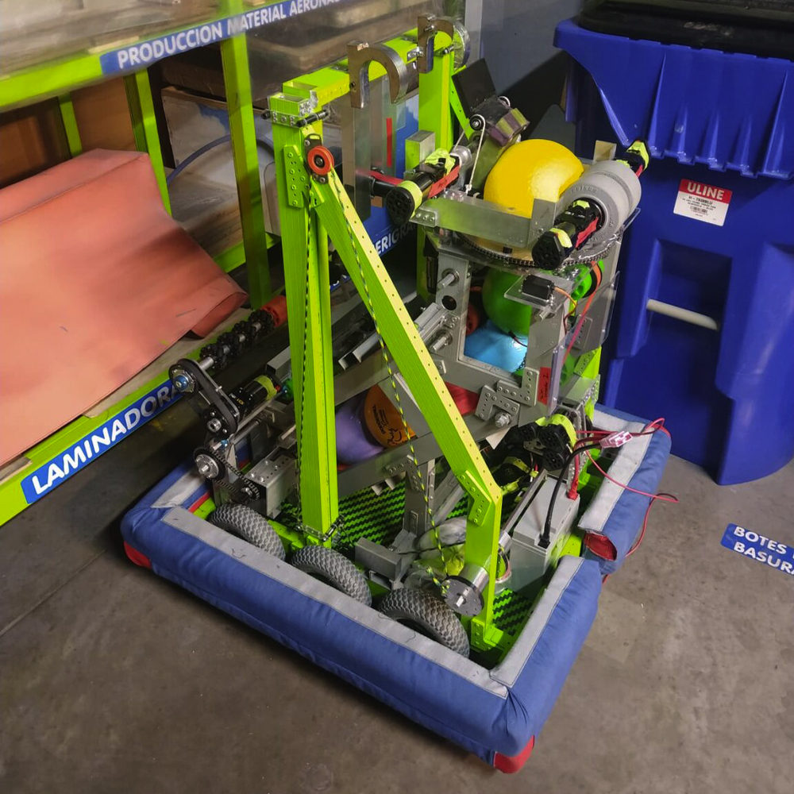

¿De que trata?

Este fue el primer robot que diseñé para la competencia de robots grandes (FRC) su propósito era recolectar y almacenar 5 pelotas de espuma de 6 pulgadas para después dispararlas dentro de una portería hexagonal a más de dos metros de altura, este robot me trajo muy buenas experiencias principalmente porque su elaboración se llevó en el hangar de la aerolinea "interjet" y tuve contacto con muchos ingenieros que me orientaron y enseñaron sobre manufactura y químicos.
En adición a esta experiencia el desempeño del robot en la competencia fue bueno por lo que obtuvimos un premio a la excelencia en ingeniería que nos llevó al mundial y de igual forma yo obtuve el premio llamado "dean's list" que se le otorga solo a 1 estudiante dentro de todo el evento el cual se caracteriza por representar de mejor manera los valores de la competencia y busca difundir el conocimiento de STEM en su comunidad.
Las características que hacen especial a este robot son:
- Chasis diferencial con llantas neumáticas hecho a medida para sobrepasar los obstáculos de la cancha.
- Intake desplegable con llantas mecanum para centrar la pelota.
- Serializador de pelotas en forma de banda para acumular las 5 pelotas.
- Disparador de 5 pelotas con un sistema de motores a altas revoluciones.
- Torreta para ajustar el ángulo del disparador con un sistema de visión artificial.
- Ángulo ajustable para cambiar la trayectoria parabólica del disparo.
- Elevador para colgar el robot con perfiles de aluminio, poleas y tres motores 775.